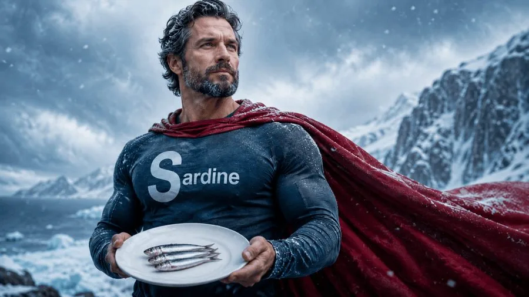

魚斷食，他得到的超能力
 想試試斷食？來玩「空腹小雞」跟思思醫師一起斷食，順便養一隻小雞。手機打開就能玩。來養小雞 →
想試試斷食？來玩「空腹小雞」跟思思醫師一起斷食，順便養一隻小雞。手機打開就能玩。來養小雞 →

我在進行魚斷食的第二天，讀到了 Nick Norwitz 最新發表的一篇 Substack 文章。他在文章裡分享了一個讓他自己都困惑的現象：他在一個月內吃了 1,000 條沙丁魚，除了全身開始有一股魚腥味之外，他意外發現自己變得耐冷了。
他在新英格蘭的冬天做這個實驗，當地氣溫經常跌到零度。他說他可以在波士頓暴風雪中脫著上衣站在外面，冷風打在身上，卻幾乎感覺不到不適。他把這個稱為「超能力」。和他做了同樣實驗的其他人，也回報了類似的感受。
乍聽之下很像在開玩笑。但 Norwitz 是哈佛醫學院出身的代謝研究者，他不太可能只是在說故事。他找到了一篇 2026 年剛在頂尖期刊 Cell 發表的研究，讓這個奇怪的現象變得科學上可以解釋。而且，這個解釋牽涉到一個你大概從來沒聽過的荷爾蒙，以及一個通常跟鼻子有關、卻被發現藏在肝臟裡的受體。
先從荷爾蒙說起。EPA 是魚油裡最重要的 Omega-3 脂肪酸之一，進入人體以後，身體可以把它轉化成一種叫做 12-HEPE（12-羥基二十碳五烯酸，12(S)-Hydroxyeicosapentaenoic Acid） 的衍生物。12-HEPE 在 2019 年就已經被確認和棕色脂肪的產熱機制有關，能促進身體透過燃燒脂肪來產生熱量，這也是 Norwitz 在零度天氣裡不怕冷的推測原因之一。他的 Omega-3 指數在實驗結束時測到 15.68%，相比之下一般美國人大約是 5%，醫學上認為 8% 以上算是理想範圍，而 Norwitz 的數值甚至接近海洋哺乳動物的水平。
但問題是：12-HEPE 怎麼運作的？它的受體是什麼？在這篇 2026 年的 Cell 研究出現以前，這個問題沒有答案。
研究者的做法非常聰明，他們把 12-HEPE 放進細胞環境中「釣」受體，用一種叫做逆向 G 蛋白拉沉法（ARIG, Anonymous Receptor Identification by Reverse G-protein pull-down）的技術，去找那個因為 12-HEPE 而被啟動的受體。結果釣到的，是一個叫做 Olfr110 的蛋白質。
Olfr110 是一個嗅覺受體（Olfactory Receptor），字面上的意思是負責偵測氣味的蛋白質，通常存在於鼻腔的嗅覺上皮細胞裡。但研究者發現，這個受體不只出現在鼻子，它同時出現在：
肝臟、棕色脂肪、下視丘（大腦）。
也就是說，一個我們以為只負責「聞氣味」的受體，其實散佈在和代謝、體溫調節、能量消耗最直接相關的組織裡。Norwitz 開玩笑說這個名字很好記，可以把它想成「Oily Fish Reeks 110」，油膩魚腥 110 號。
研究者接著做了敲除實驗，把小鼠體內的 Olfr110 基因移除，看看少了這個受體會發生什麼事。結果很明確：在高脂飲食的挑戰下，缺少 Olfr110 的小鼠體重增加得多很多，能量消耗大幅下降，代謝率幾乎下降了一半，空腹胰島素上升了將近五倍，肝臟脂肪沉積增加了一倍以上，而且出現明顯的葡萄糖不耐受和胰島素阻抗。
這些數據拼在一起的圖像是：沒有足夠的 12-HEPE 訊號，代謝就慢下來，脂肪就開始囤積，胰島素就失靈。 而 12-HEPE 訊號的啟動，需要這個藏在肝臟和棕色脂肪裡的嗅覺受體。
在細胞層面，12-HEPE 與 Olfr110 結合後，會啟動一連串的胞內訊號（Gs-PKA-pATF2），進而促進 Cpt1a 的表現。Cpt1a 是脂肪酸氧化的關鍵酵素，負責把脂肪酸送進粒線體燃燒，是「脂肪燃燒這道門的守門人」。啟動它，脂肪才真的燒得起來。
研究者在人類數據上也看到了呼應的訊號：肥胖受試者的血清樣本，在 Olfr110 受體上誘發的 Gs 訊號活化程度，比體重正常的人顯著更低。也就是說，BMI 越高的人，這條 12-HEPE 的訊號路徑就越弱。和動物實驗的方向一致，12-HEPE 的不足，可能既是肥胖的結果，也是加速肥胖的原因。
把整條路徑整理起來：
富脂肪魚（沙丁魚、鯖魚、秋刀魚）→ EPA → 12-HEPE → Olfr110 受體（肝臟、棕色脂肪、大腦）→ Cpt1a 活化 → 脂肪酸燃燒、產熱上升、胰島素敏感性改善、肝臟脂肪下降。
這條路徑解釋了為什麼魚斷食在代謝上能做到一般斷食做不到的事：它不只是在降低熱量攝取，它還同時透過大量的 EPA，積極地把代謝引擎給啟動起來。
Norwitz 表示：他沒有辦法百分之百確認，他的耐冷超能力就是 12-HEPE 造成的。但他認為，當一個自我實驗的奇怪現象，正好遇上一篇 Cell 等級的研究給出了機轉，這種資料和親身經歷的交會，才是科學向前走的方式。
我現在是魚斷食的第二天。讀完這篇，我對接下來三天的實驗，又多了一點期待。
（本文由我規劃架構與觀點，並協同 AI 校正與潤飾語句）
空腹小雞跟思思醫師一起斷食，順便養一隻小雞來養小雞 →
好朋友週信
每週五一封：《健康駭客週報》這集的研究重點，加上家醫專欄這週的新文章。免費，隨時可以退訂。
延伸閱讀

每週兩罐沙丁魚，逆轉你的代謝問題
2021 年隨機對照試驗中，糖尿病前期長者每週多吃兩罐沙丁魚，一年後 FINDRISC 極高風險比例由 37.3% 降到 7.7%，胰島素阻抗也下降。

鯖魚、沙丁魚、秋刀魚，魚斷食用哪種最好？
秋刀魚Omega-3含量最高達3.77克/100克，帶骨罐頭沙丁魚鈣質382毫克/100克最豐富，鯖魚最常見，選擇取決於補充優先順序。

間歇性斷食改善老年輕度認知障礙——文獻分享
74歲輕度認知障礙患者執行15:9間歇性斷食12週，蒙特婁認知評估改善1.7分且體重無差異，配合度達87%，但長期效果仍需更大規模研究支持。